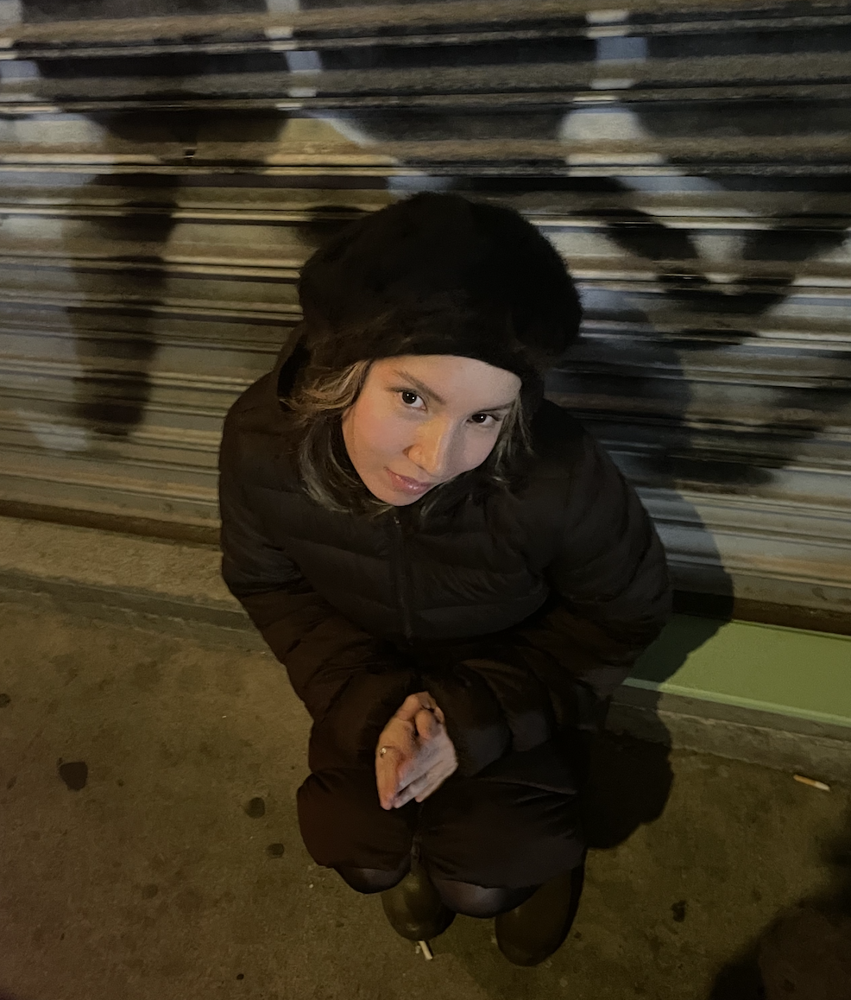
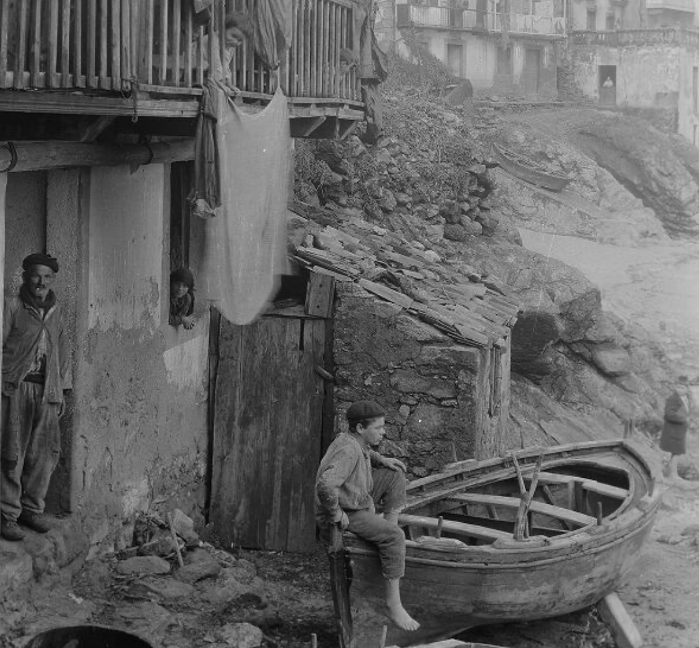
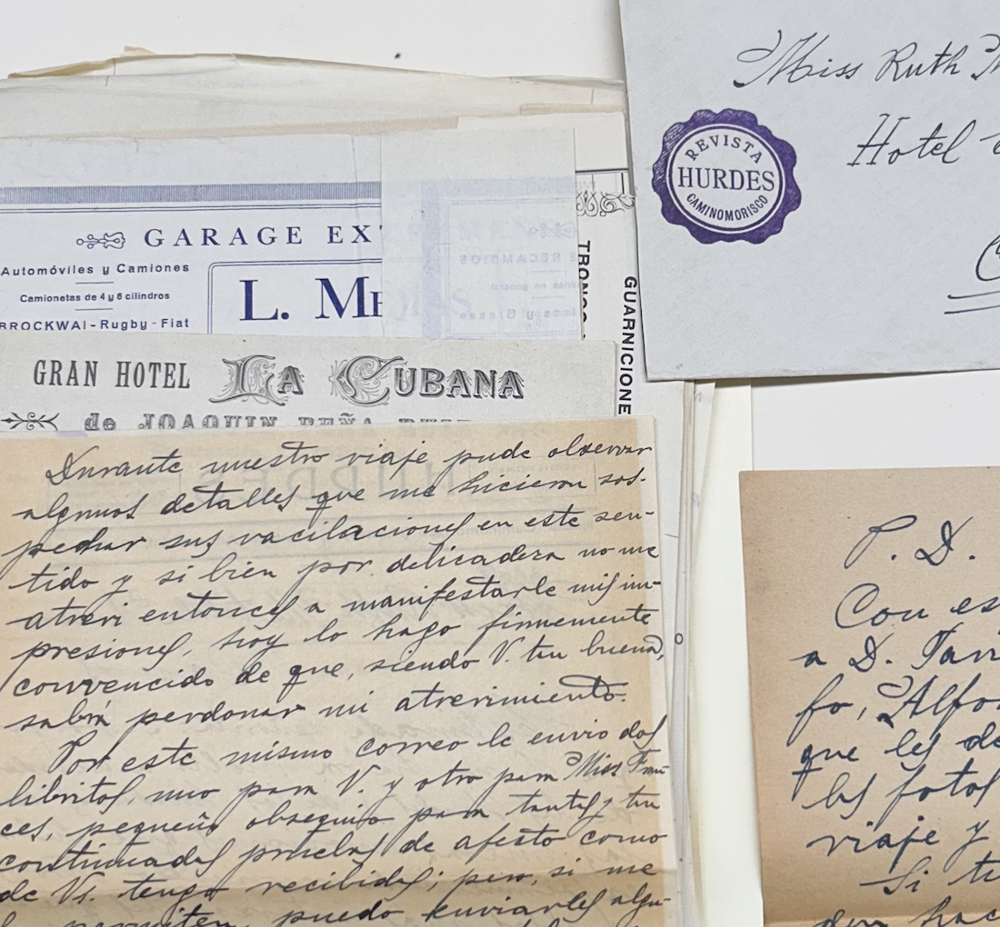
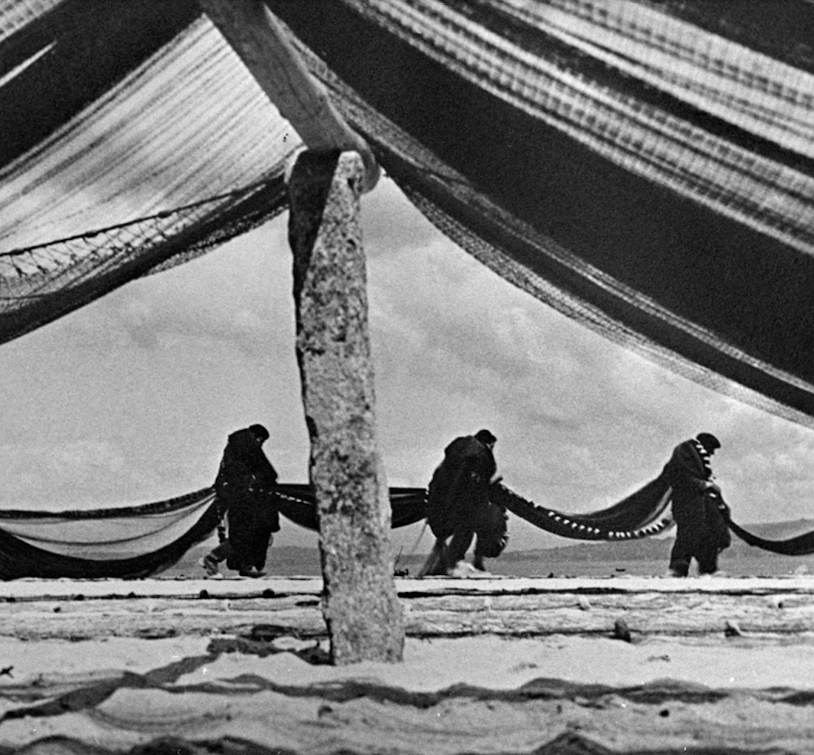

Beatrice Sujin Lee Sampedro

Beatrice Sujin Lee Sampedro is a New York-based archivist focused on Spanish-language library and archival materials. She is currently a Leon Levy Cataloging Fellow at the Hispanic Society Museum & Library in New York, where she oversees the cataloging and digitization of the Ruth Matilda Anderson photographic collection, hosted on the open-source DAMS platform, Archipelago. She is completing her MS in Library and Information Science at Pratt Institute, and holds an MA in Patrimonio Audiovisual from Universidad Complutense de Madrid, and a B.A. in History from Cornell University.
Beatrice has worked in archives as both an archivist and historian. She has experience in cataloging and conserving physical and digital collections, from nitrate and acetate negatives, to textual records. She also conducted historical research for her thesis project, tracing the censored and lost documentary Mariñeiros (1936), by José Suárez. She is especially interested in how archival traces can bring lost or overlooked stories back into view.
In her free time, Beatrice is an avid shopper of second-hand clothes. She has an active Depop page, and loves to put her archival skills to use when conserving old items, and discovering new ones (i.e. free searching for items online using complicated booleans). She is a part-time stylist for her loved ones, but does not wish to commercialize this talent.
Beatrice is also currently learning HTML and CSS. She has used some of her recent learnings to make this website. While she is a humanities girlie, she hopes her professor will be patient with her as she trudges along. She has particularly enjoyed the CSS components because beautifying things is fun. While these last two paragraphs are for fun (and to complete the "several paragraphs" reqirement), she's pretty excited to use this as the basis for a real personal website at some point in the future! Below she has included the CSS validator icon.

work
- ARCHIVAL PROJECTS
-

Digital Collection for the Hispanic Society Museum & Library (Ruth Matilda Anderson Photographic Collection)
Image credit: Hispanic Society Museum & Library, accession no. 5546. CC BY 4.0 -

Finding Aid for the Hispanic Society Museum & Library (Ruth Matilda Anderson Papers) -

Master's Thesis: Mariñeiros (1936): Tracing a Lost Galician Documentary Film Between Republic and Regime
Image credit: Courtesy of the José Suárez Family Archive
-
- PRESS
- "Beatrice Lee Sampedro, de Estados Unidos a Barbanza para seguir las fotografías de Ruth Matilda Anderson," La Voz de Galicia, October 12, 2026
- "Todas as fotografías de Ruth Matilda Anderson en Galicia, en acceso libre e na rede," Praza Pública, September 10, 2026